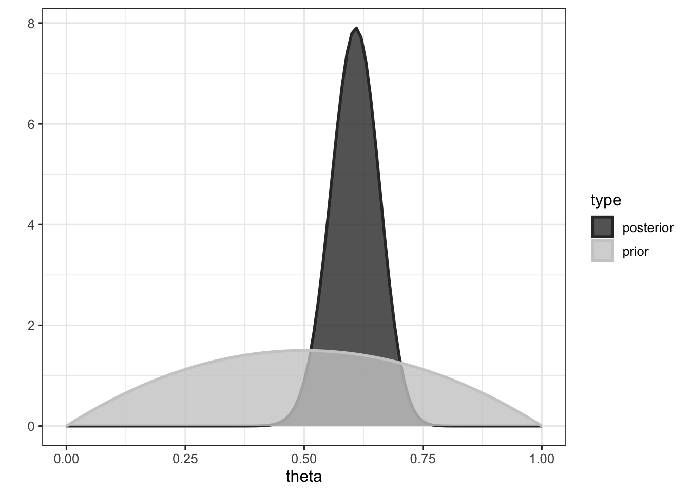
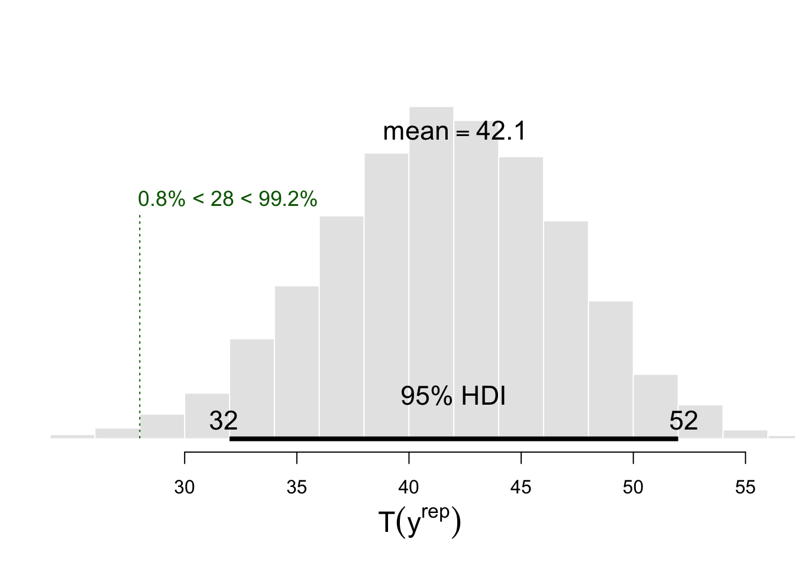

# Checking the assumption of independence in binomial trials
# Example inspired from Gelman et al. (2013, page 147)
library(tidyverse)
y <- # getting the data
c(
0, 0, 0, 1, 1, 1, 0, 0, 0, 1, 1, 1, 1, 1, 1, 1, 0, 0,
0, 1, 0, 1, 1, 1, 0, 0, 1, 1, 1, 1, 1, 1, 1, 0, 0, 1,
1, 0, 0, 1, 1, 1, 1, 1, 1, 1, 1, 1, 1, 1, 0, 0, 0, 0,
1, 0, 0, 1, 1, 1, 0, 1, 1, 1, 1, 1, 1, 0, 0, 0, 0, 1,
0, 1, 0, 1, 1, 1, 0, 0, 0, 0, 0, 1, 1, 1, 1, 1, 1, 0
)Posterior predictive checking
What is a posterior predictive check ? According to Gelman et al. (2013, page 151), “Bayesian predictive checking generalizes classical hypothesis testing by averaging over the posterior distibution of the unknown parameters vector \(\theta\) rather than fixing it at some estimate \(\hat{\theta}\)”.
To explore this idea in more details, we are going to extend an example presented in Gelman et al. (2013, page 147) to a case study I have already discussed in two previous blogposts (here and here). Let’s say I am recruiting participants for a psychology study that is lasting for approximately half an hour. If everything goes smoothly, I can manage to recruit 2 participants per hour, and doing it between 9am and 6pm (having the first participant at 9am, the second one at 9.30am and the last one at 5.30pm) for a whole week (from Monday to Friday) would give me 90 potential participants.
Beta-Binomial model
We know that some participants won’t show up to the time slot they registered for. I am interested in knowing the mean probability of presence, that we will call \(\theta\).
This sequence of binary outcomes (presence vs. absence) \(y_{1}, \dots, y_{n}\) is modelled as a serie of independent trials with common probability of success (presence) \(\theta\), which is attributed a conjugate Beta prior, with shape parameters \(\alpha\) and \(\beta\) (encoded in the second line of our model).
\[ \begin{aligned} y &\sim \mathrm{Binomial}(n, \theta) \\ \theta &\sim \mathrm{Beta}(\alpha, \beta) \\ \end{aligned} \]
We could choose to give \(\theta\) a uniform prior between 0 and 1 (to express our total ignorance about its value), but based on previous experiments I carried out, I know that participants tend to be present with a probability around \(\frac{1}{2}\). Thus, we will choose a probability distribution that represents this prior knowledge (here a \(\mathrm{Beta}(2,2)\), see the first figure for an illustration).
The problem
Our model is assuming independent trials, i.e., it’s assuming that the presence of a participant is independent of the presence of another participant, which is akin to say that the model is assuming no autocorrelation in the serie. Autocorrelation would be evidence that the model is flawed.
One way to estimate the degree of autocorrelation in the serie is to simply count the number of switches between presence and absence (i.e., between zeros and ones). An abnormally low number of switches (for a particular \(n\) and \(\theta\)) would be evidence that some autocorrelation is present. Thus, the number of switches becomes a test quantity \(T(y)\), which describes the degree of autocorrelation in the serie, and a way of testing the assumptions of our model.
# function to determine the number of switches in a numerical vector
nb_switches <- function(x) as.numeric(sum(diff(x) != 0) )
# determining the number of switches Ty in observed data y
(Ty <- nb_switches(y) )[1] 28We observed 28 switches in our data. To know whether this number is surprising, given our number of observation and the mean probability of presence, we will use use posterior predictive checking. But first, we need to compute the posterior distribution \(p(\theta | y)\).
Computing the posterior distribution
We know that the posterior density under this model is given by:
\[ p(\theta | y) \sim \mathrm{Beta}(\alpha + y, \beta + n - y) \] where \(y\) is the number of successes and \(n\) is the total number of observations. In our case, the posterior distribution of \(\theta\) given \(y\) is then \(\mathrm{Beta}(2 + 55, 2 + 90 - 55) = \mathrm{Beta}(57, 37)\), which is plotted below.
###############################################################
# computing the posterior
#######################################################
n <- length(y) # number of trials
z <- sum(y) # number of 1s
a <- b <- 2 # parameters of the beta prior
grid <- seq(from = 0, to = 1, by = 0.01) # defines grid
################################################
# analytic derivation of the posterior
#########################################
prior <- dbeta(grid, a, b)
posterior <- dbeta(grid, z + a, n - z + b)
data.frame(theta = grid, prior = prior, posterior = posterior) %>%
gather(type, value, prior:posterior) %>%
ggplot(aes(x = theta, y = value, colour = type, fill = type) ) +
geom_area(alpha = 0.8, position = "identity", size = 1) +
theme_bw(base_size = 12) +
scale_fill_grey() +
scale_colour_grey() +
ylab("")
The mean of the posterior distribution is given by \(\dfrac{\alpha + y}{\alpha + \beta + n}\), and is equal to (a + z) / (a + b + n) = 0.606, which can be interpreted as the mean probability of presence.
Conjugacy
This example allows us to define what conjugacy is. Formally, if \(\mathcal{F}\) is a class of sampling distributions \(p(y|\theta)\), and \(\mathcal{P}\) is a class of prior distributions for \(\theta\), then the class \(\mathcal{P}\) is conjugate fo \(\mathcal{F}\) if
\[p(\theta|y) \in \mathcal{P} \text{ for all } p(\cdot | \theta) \in \mathcal{F} \text{ and } p(\cdot) \in \mathcal{P}\]
(Gelman et al., 2013, page 35). In other words, a prior is called a conjugate prior if, when converted to a posterior by being multiplied by the likelihood, it keeps the same form. In our case, the Beta prior is a conjugate prior for the Binomial likelihood, because the posterior is a Beta distribution as well.
Posterior predictive checking
How posterior predictive checking can help us to assess whether the assumption of indendence is respected in our observed data \(y\) ? Well, our model is actually assuming independence, so we could ask our model to generate new observations, or replications, called \(y^{rep}\), to see whether these replications differ from the observed data. If they do, it would mean that the observed data are not well described by a model that is assuming independence.
This is done in two steps. First, we generate possible values of \(\theta\) from its posterior distribution (i.e., from a \(\mathrm{Beta}(57, 37)\) distribution). Then, for each of these \(\theta\) values, we generate a new set of observations \(y^{rep}\) from a Binomial distribution.
########################################################
# posterior predictive checks
#######################################
nsims <- 1e4 # number of replicated samples
# generating nsims theta values from posterior
thetas <- rbeta(nsims, a + z, b + n - z)
# generating nsims new datasets (Yrep)
Yrep <-
sapply(
# for each theta
1:length(thetas),
# generating samples
function(i) sample(
c(0, 1),
# of the same length as y
length(y),
replace = TRUE,
# with prob of presence equals to theta
# and prob of absence equals to 1 - theta
prob = c(thetas[i], 1 - thetas[i])
)
)Then, we can compute the number of switches (our test quantity) in each replicated sample, to check whether the number of switches computed on datasets generated under the assumption of independence differ from the number of switches computed on the observed dataset \(y\). We call the test quantities computed on replicated samples \(T(y^{rep})\).
# for each new Yrep sample, computing the number of switches Trep, and
# comparing it to observed number of switches Ty
Trep <- apply(Yrep, 2, nb_switches)
Trep %>%
BEST::plotPost(
compVal = Ty, breaks = 20,
col = "#E6E6E6", xlab = expression(T(y^rep) ) )
This histogram reveals that the mean number of switches accross the nsims replications is about 42.08, and the green vertical dotted line represents the position of \(T(y)\) in the distribution of \(T(y^{rep})\) values.
To know whether the observed number of switches is surprising given the assumptions of our model (represented by its predictions), we can count the number of replications that lead to a greater number of switches than the number of switches \(T(y)\) in the observed data.
sum(Trep > Ty)[1] 9923Or we can compute a Bayesian p-value as (Gelman et al., 2013, page 146):
\[p_{B} = \text{Pr}(T(y^{rep}, \theta) \geq T(y, \theta) | y)\]
1 - sum(Trep > Ty) / nsims # equivalent to sum(Trep <= Ty) / nsims[1] 0.0077Which gives the probability of observing this number of switches under our model. What does it mean ? Does it mean that our model is wrong ? Well, not exactly. Models are neither right or wrong (see Crane & Martin, 2018). But our model does not seem to capture the full story, it does not seem to give a good representation of the process that generated our data (which is arguably one of the characteristics that contribute to the soundness of a model).
More precisely, it misses the point that the probabilities of successive participants being present are not independent. This, in our case, seems to be due to temporal fluctuations of this probability throughout the day. For instance, the probability of a participant being present seems to be the lowest early in the morning or late in the afternoon, as well as between 12am and 2pm. This temporal dependency could be better taken into account by using gaussian process regression models, that generalise the varying effect strategy of multilevel models to continuous variables. In other words, it would allow to take into account that participants coming to the lab at similar hours (e.g., 9am and 9.30am) are more similar (in their probability of being present) than participants coming at very different hours (e.g., 9am and 3pm).
Conclusions
In this post we aimed to introduce the idea of posterior predictive checking by recycling an elegant and simple example from Gelman et al. (2013). It should be noted however that this kind of check can be done for any test quantity of interest (e.g., the mean or the max of a distribution, or its dispersion).
As put by Gelman et al. (2013, page 148), “because a probability model can fail to reflect the process that generated the data in any number of ways, posterior predictive p-values can be computed for a variety of test quantities in order to evaluate more than one possible model failure”.
So come on, let’s make p-values great again, they are not doomed to be used only as a point-null hypothesis test.
References
Click to expand
Crane, H., & Martin, R. (2018, January 10). Is statistics meeting the needs of science? Retrieved from psyarxiv.com/q2s5m
Gelman, A., Carlin, J. B., Stern, H. S., Dunson, D. B., Vehtari, A., & Rubin, D. B. (2013). Bayesian Data Analysis, Third Edition. CRC Press.
Citation
BibTeX citation:
@online{nalborczyk2018,
author = {Nalborczyk, Ladislas},
title = {Checking the Asumption of Independence in Binomial Trials
Using Posterior Predictive Checking},
date = {2018-01-23},
url = {https://lnalborczyk.github.io/blog/2018-01-23-ppc},
langid = {en}
}
For attribution, please cite this work as:
Nalborczyk, L. (2018, January 23). Checking the asumption of
independence in binomial trials using posterior predictive
checking. https://lnalborczyk.github.io/blog/2018-01-23-ppc